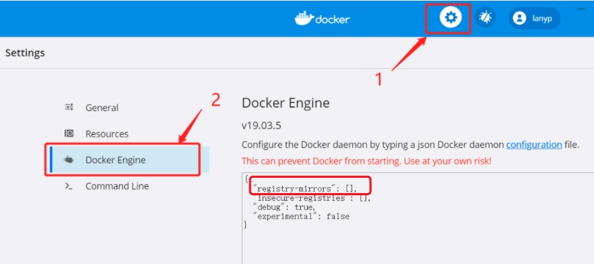

Docker Image Acceleration
In China, pulling images from Docker Hub can sometimes be difficult. In this case, you can configure a mirror accelerator.
Currently, there are some issues with domestic Docker mirror sources in China, and they are basically unusable. I'll update this later once they become usable again.
Docker official and many domestic cloud service providers offer accelerator services in China, for example:
- USTC mirror:https://docker.mirrors.ustc.edu.cn/
- NetEase:https://hub-mirror.c.163.com/
- Aliyun:https://<yourID>.mirror.aliyuncs.com
- Qiniu Cloud Accelerator:https://reg-mirror.qiniu.com
After configuring one accelerator address, if you find that images cannot be pulled, switch to another accelerator address. Major domestic cloud service providers all offer Docker image acceleration services. It is recommended to select the corresponding image acceleration service based on the cloud platform where Docker is running.
Alibaba Cloud image acquisition address:https://cr.console.aliyun.com/cn-hangzhou/instances/mirrorsAfter logging in, select Mirror Accelerator in the left menu and you will see your dedicated address:

There used to be an official Docker accelerator as well.https://registry.docker-cn.comIt seems that it can no longer be used now. We can add several more domestic mirrors. If some are unusable, it will switch to usable mirrors for pulling.
Ubuntu14.04、Debian7Wheezy
For systems using upstart, edit the /etc/default/docker file and configure the accelerator address in DOCKER_OPTS:
DOCKER_OPTS="--registry-mirror=https://registry.docker-cn.com"
Restart service:
$ sudo service docker restart
Ubuntu16.04+、Debian8+、CentOS7
For systems using systemd, write the following content in /etc/docker/daemon.json (create the file if it does not exist):
{"registry-mirrors":["https://reg-mirror.qiniu.com/"]}
Then restart the service:
$ sudo systemctl restart docker
Windows 10
For systems using Windows 10, right-click the Docker icon in the system tray at the bottom right, select Settings, then in the configuration window select Daemon in the left navigation menu. Fill in the accelerator address in the Registrymirrors field,https://docker.mirrors.ustc.edu.cn/then click Apply to save, and Docker will restart and apply the configured mirror address.

Mac OS X
For users of Mac OS X, click the Docker for Mac app icon in the taskbar -> Preferences... -> Daemon -> Registry mirrors. Fill in the accelerator address in the list.https://reg-mirror.qiniu.comAfter making the changes, click the Apply&Restart button, and Docker will restart and apply the configured mirror address.

Check whether the accelerator has taken effect
Check whether the accelerator is effective. After configuring the accelerator, if pulling images is still very slow, manually check whether the accelerator configuration is effective. Run the following command in the command line:docker infoIf you see the following content in the results, the configuration is successful.
$ docker info
Registry Mirrors:
https://reg-mirror.qiniu.comother extensions